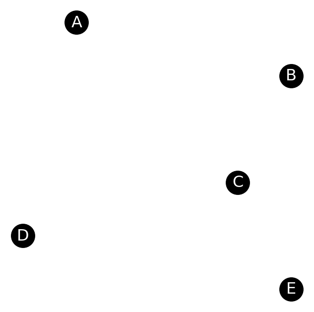

Navigable Graphs via Set Cover Implementation Notes
\[
\DeclareMathOperator*{\argmax}{argmax}
\]
So, I keep forgetting to write down exactly how I go about the implementation for building a navigable graph via set cover. So here goes.
1 Setup
Goal: Construct a graph \(G = (V, E)\) with the fewest number of edges such that \(G\) is navigable for some distance metric \(d\). \(G\) is navigable iff for every \(s,t \in V\), pair, there exists a directed edge \((s, k) \in E\) s.t. \(d(k, t) < d(s,t)\).
Let \(\mathbf V\) be an \(n \times m\) matrix, which contains \(n\) vectors of length \(m\) and let \(\mathbf M \in \mathbb R^{n \times n}\) be the distance matrix, such that the \(i,j\)th entry of \(\mathbf M\) corresponds to the distance between the \(i\)th and \(j\)th vectors in \(\mathbf V\). From \(M\), we can compute a permutation matrix, \(\mathbf \Pi^{-1} \in \mathbb N^{n \times n}\), where \(\Pi^{-1}_{ij}\) is the positional rank of the \(V_j\) in the sorted list of \(V_i\)’s nearest neighbors. I.e, if \(\Pi^{-1}_{ij} = k\), \(V_j\) is \(V_i\)’s \(k\)th closest neighbor.
2 Vectorized Set Construction and Greedy Set Cover
Consider solving the set cover instance on vector \(V_i\). There are exactly \(n-1\) sets (one for each of the other vectors) and we will call these \(S_{i \to j}\). Each of the sets contains all the vectors that traversing the edge \((i,j)\) would bring a search algorithm strictly closer to. Formally: \[
S_{i\to j} = \left\{k \in [1, \dots, n] : d(V_j, V_k) < d(V_i, V_k) \right\}
\] Solving a set cover problem on these sets, i.e., picking the minimum number of sets whose union is \(\{1, \dots, n\}\), gives us a set of out edges from \(V_i\) that would have at least one greedy edge for every other vector in the graph. We can build these sets using the inverse-permutation matrix as follows:
Let \(\mathbf S \in \{0,1\}^{n \times n}\) be the matrix whose \(i,j\)th columns corresponds to the set \(S_{i \to j}\), s.t., if \(k \in S_{i \to j}\), then \(S_{jk} = 1\), \(0\) otherwise.
Select the \(i\)th column of \(\mathbf \Pi^{-1}\), which gives tells us the rank of \(V_i\) in every other vector’s sorted nearest neighbor list. Call this \(\pi^{-1}_i\).
Compare \(\pi_i\) with every other column \(\pi_j\) entry-wise and set \(S_{j k} = 1\) if \(\pi^{-1}_{j k} < \pi^{-1}_{i k}\), \(0\) otherwise.
We can now run a greedy set cover algorithm on the columns of \(\mathbf S\). Let \(\mathbf u \in \{0, 1\}^n\) be a vector to keep track of the uncovered elements. Initially, only the \(i\)th entry of \(\mathbf u\) is \(0\) (since \(V_i\) covers itself) and every \(u_j = 1\) for \(i \neq j\). Each step of the greedy set cover will proceed as follows:
Select the column \(S_j\) s.t. \[j = \argmax_{j \in [1, \dots, n]} \mathbf S^\top \mathbf u\] This corresponds to selecting the set that covers the maximum number of uncovered elements.
Update the list of uncovered elements: \(\mathbf u \gets \overline{\overline{\mathbf u} \mid \mid S_j}\), where \(\overline{\mathbf u}\) is the bitwise complement of \(\mathbf u\) and \(\mid\mid\) is the bitwise or operation.
Repeat till \(\mathbf u\) is the all \(0\)s vector.
3 Example
Consider the following set of points: \(A(-2,2),B(2,1),C(1,-1),D(-3,-2),E(2,-3)\).
Code
import numpy as npimport networkx as nximport matplotlib.pyplot as pltpoints = np.array([ [-2,2], [2,1], [1,-1], [-3,-2], [2,-3]])# Create a graphG = nx.Graph()# Add nodes with positionsfor i, (x, y) inenumerate(points): G.add_node(chr(i+65), pos=(x, y))# Get positions dictionarypos = nx.get_node_attributes(G, 'pos')# Draw the graphplt.figure(figsize=(4, 4))nx.draw_networkx_nodes(G, pos, node_color='black', node_size=300)nx.draw_networkx_labels(G, pos, font_color='white')plt.axis('off')plt.show()

The distance matrix (with Euclidean distances) is:
Code
import numpy as npfrom scipy.spatial.distance import cdistpoints = np.array([ [-2,2], [2,1], [1,-1], [-3,-2], [2,-3]])# Compute squared distancesgrid = cdist(points, points, metric='sqeuclidean')grid = grid.astype(int)# Build LaTeX string with sqrt symbolslatex_matrix =r'\begin{equation*}\mathbf{M} = \begin{bmatrix}'rows = [' & '.join(r'\sqrt{'+str(int(val)) +r'}'for val in row) for row in grid]latex_matrix +=r' \\ '.join(rows)latex_matrix +=r'\end{bmatrix}\end{equation*}'print(latex_matrix)